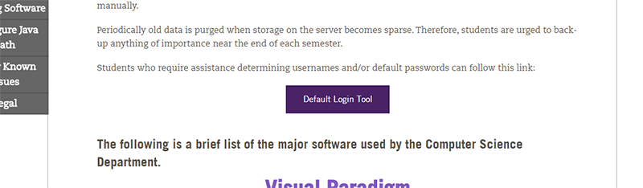
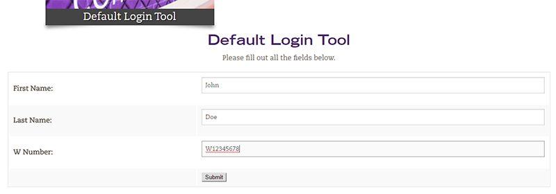
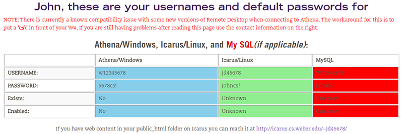
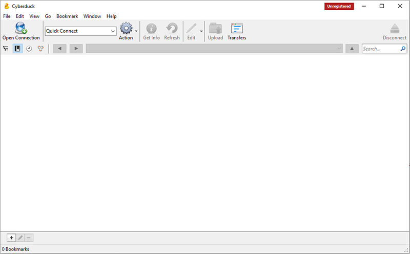
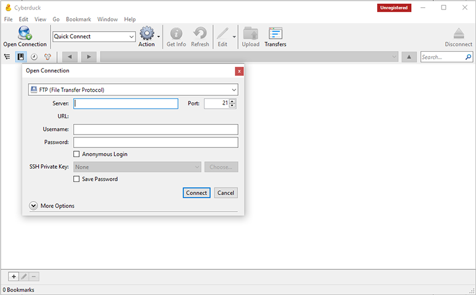
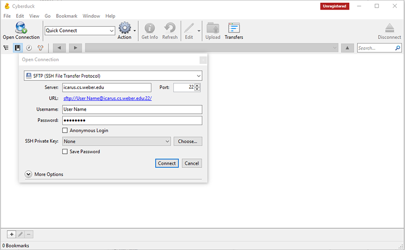
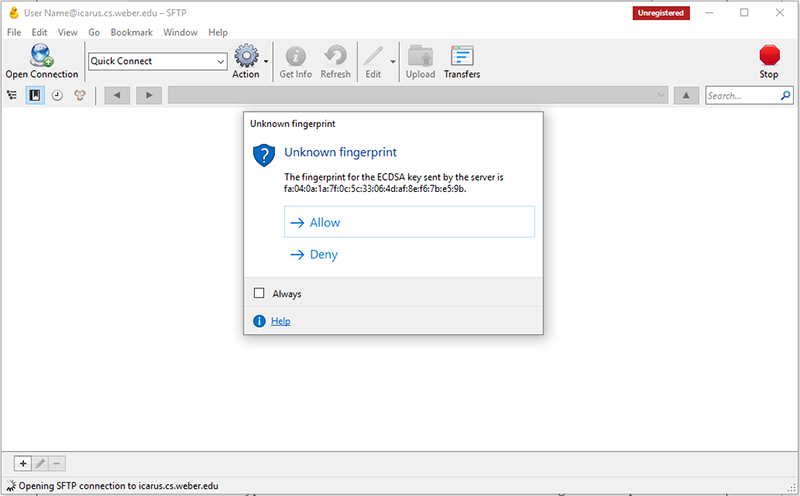
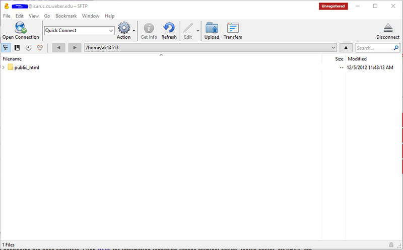

The first step to gaining access to the Icarus server is finding your username and password. Thankfully the Computer Science department offers a helpful tool that makes finding your login info a snap. Start by heading over to the CS Technical Support page, available here and click on the "Default Login Tool" button. (See Below)
After clicking on the "Default Login Tool" button you will be taken to a form where you will enter your first and last name as well as your W number.
Once you have entered your correct info a page that looks like the one below will appear. The information in the green column is the information we'll use to login to Icarus through our FTP client. The URL below the table is where your pages will be avaiable once you've published them on Icarus
Next we'll connect to the server through an FTP client. You can use any client you'd like, but here we'll be using Cyberduck, which is available to download from Cyberduck.io.

Once you've downloaded and installed Cyberduck, open it up. You should see a screen like the one below.
Start by clicking on the "Open Connection" button which will open the new connection dialog box.
On this connection screen, make sure you select SFTP from the dropdown menu. In the server box, put icarus.cs.weber.edu or 137.190.19.20 . Put the username and password you found earlier in their appropriate boxes and make sure the port is 22. You can click Save Password to you don't have to type your password each time, just make sure not to do this on a shared computer. Once everything looks good, click connect.
This "Unknown Fingerprint" warning may popup, just hit allow.
If you've entered all your information correctly then you should now be connected to the server and see a "public_html" folder. Any files you put in this folder will be visible when you go to the URL from the Default Login Tool, so put your website files here and you'll be good to go.
